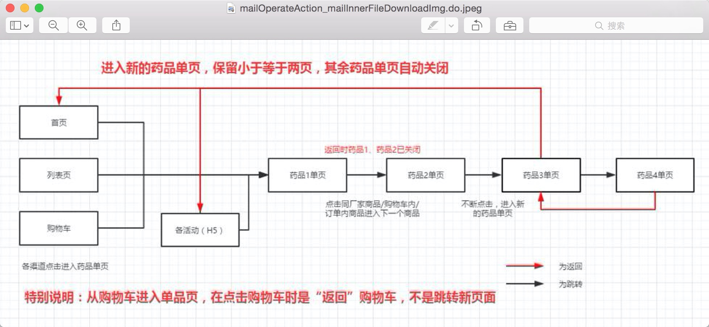
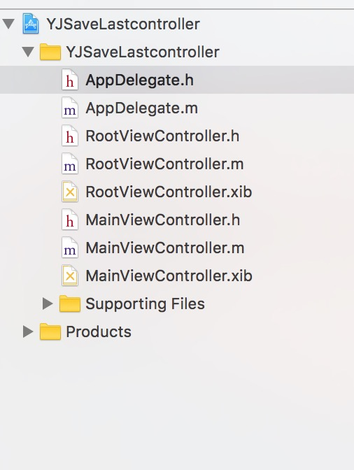
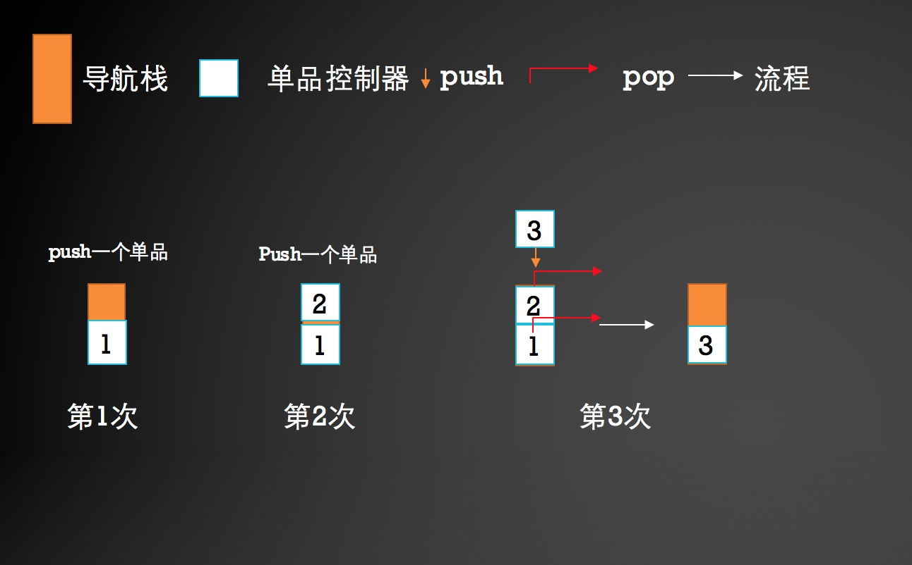
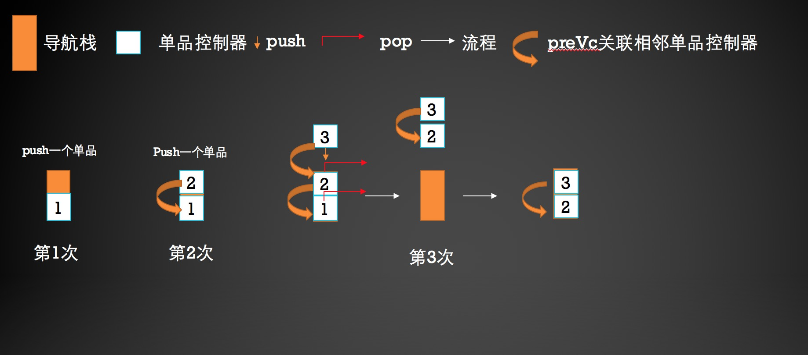

今天跃军有一个比较特殊的需求，想特此记录一下解决过程，进行备注并有机会进行优化更新！
大致是这样：
在一个导航控制器的栈顶控制器开始计数,从这里开始往后push的控制器都叫单品控制器(需求说是叫这个,实际就是一个商品详情页面),如果单品控制器超过2个后,用户点按返回的时候,只能看到倒数第二个单品控制器,到了倒数第二个单品控制器,再返回,就返回到开始计数前的那个控制器了。
需求图如下:

最后实现了的效果图:
开始,朋友给了个demo,写了个解决方法
- demo内容有:
- 建立一个根控制器充当开始计数之前的那个控制器(RootViewController)
- 建立单品控制器(MainViewController),也就是个商品详情页
- keyWindow的根控制器为一个导航控制器
如图所示:

- demo的参数和方法设置:
AppDelegate里面设置了一个全局变量goodsCount用于计数单品的数量
1
2/** 记录工程中有多少个单品页 */
@property (nonatomic, assign) NSInteger goodsCount;RootViewController里面有一个按钮可以push到第一个单品页
1
2MainViewController * mainVc = [[MainViewController alloc] init];
[self.navigationController pushViewController:mainVc animated:YES];单品控制器(MainViewController)里重写init方法,使全局变量goodsCount++
1
2
3
4
5
6
7- (instancetype)init{
self = [super init];
if (self) {
[AppDelegate delegate].goodsCount++;
}
return self;
}MainViewController 页面有一个按钮可以push到下一个控制器
代码如下:1
2
3
4
5
6
7
8
9
10MainViewController * mainVc = [[MainViewController alloc] init];
NSLog(@"【Push前单品页的个数】= %ld", [AppDelegate delegate].goodsCount);
if ([AppDelegate delegate].goodsCount > 2) {
for (NSInteger i = 0; i < [AppDelegate delegate].goodsCount - 1; i++) {
[self.navigationController popViewControllerAnimated:NO];
}
[AppDelegate delegate].goodsCount = 1;
}
[self.navigationController pushViewController:mainVc animated:YES];单品返回(pop)的时候代码如下:
1
2[AppDelegate delegate].goodsCount--;
[self.navigationController popViewControllerAnimated:YES];
先不去求证这个解决方法的算法本身,刚看的直觉来说,这种某一个具体业务功能的需求最好还是不用AppDelegate这种全局单例去做一些辅助性的工作,觉得不太好,最好是业务本身就能解决自己的问题,本着这个思想,又具体看了下哥们的实现算法的思路,首先发现两个问题所在:
问题一,MainViewController中push到下一个控制器,循环pop中的self在pop出去之后应该会释放掉
问题二,这个方法实现不了需求中的只是留下最后两个控制器如图:

可见,如果把1、2都pop出去并没有达到预期的目的:剩最后两个
改进的解决方案:
让每下一个单品创建出来之后,有一个preVc的属性可以引用它的上一个单品控制器
先上图:

此时我们在MainViewController的.h文件中加上对上一个控制器的引用preVc:1
@property (nonatomic, strong) MainViewController *preVc;
然后更改MainViewController跳转到下一个控制器的方法:1
2
3
4
5
6
7
8
9
10
11
12
13
14
15
16
17UINavigationController *nav = (UINavigationController *)[AppDelegate delegate].window.rootViewController;
MainViewController * mainVc = [[MainViewController alloc] init];
mainVc.preVc = self;
if (nav.childViewControllers.count-1 == 2) {
[nav popViewControllerAnimated:NO];
[nav popViewControllerAnimated:NO];
[nav pushViewController:mainVc.preVc animated:NO];
[nav pushViewController:mainVc animated:YES];
mainVc.preVc.preVc = nil;
} else {
[nav pushViewController:mainVc animated:YES];
}
最后,因为push的控制器都会引用前一个控制器,所以需要mainVc.preVc.preVc = nil;进行释放。
至此，完成需求,大功告成!^ _ ^